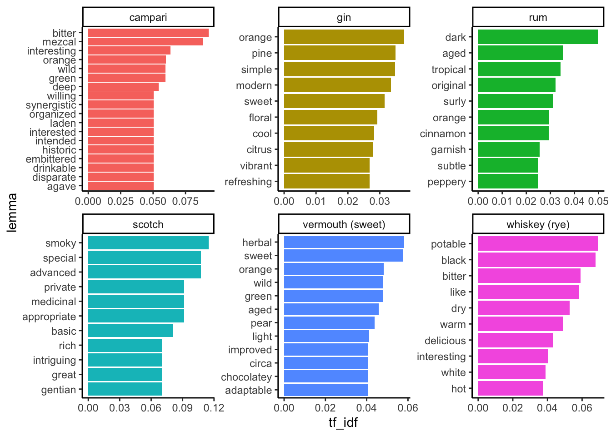

11 Data literacy and an applied example of data science
# Setup chunk is made visible for clarity
knitr::opts_chunk$set(message = FALSE, warning = FALSE)
library(tidyverse)
library(skimr)
library(naniar)
library(ggforce)
library(broom)
set.seed(1414)
# Some speciic text-mining tools
library(rvest)
library(tidyverse)
library(robotstxt)
library(tidytext)
library(spacyr)11.1 Text mining and processing
Today we’re going to walk through some work that’s been ongoing since (*gulp*)… 2019. Being a faculty member sometimes means that projects you’re excited about get put really on the back burner!
The overall goal of this project wasis to develop tools to analyze the flavor of cocktails, as described on a blog that I’ve been a big fan of since I graduated from undergrad–it’s called Cocktail Virgin, and the author(s) have posted and blogged about 1-3 cocktails per day since 2007! As an aside, if you want to learn to be a “mixologist”, this is a great resource. Love it to death.

The Cocktail Virgin website today.
11.1.1 Introduction: the data source
The reason I thought this would be an interesting project are the following:
- Cocktails are recipes for almost pure flavor–the flavor chemists in this room will tell you that ethanol is a better solvent for most flavor compounds than water, and the lack of other matrix effects means that the combinations of specific (mass-produced) ingredients allows for close-to-experimental control of flavor in cocktails.
- The Cocktail Virgin site has a very large database of cocktails (at last count >5000, but since that was 6 months ago we might be >6000 at this point).
- The format of the posts on the Cocktail Virgin site are very regular, which makes automatic text processing easier.
- The authors of Cocktail Virgin have always put a focus on flavor in their non-recipe text: they always talk about the way a cocktail smells and tastes. This makes it a potentially really interesting resource for connecting the ingredients in cocktails to the flavors in those cocktails, without spending thousands of dollars on experimentation.
This last point is really what motivated me. Let’s take a look at a classic example, The Herbivore, posted September 10, 2020. Ignoring the photo, we have the classic elements of a Cocktail Virgin post.
- The title is the name of the cocktail:
the herbivore
- This is followed by a well-structured recipe for the cocktail
1 1/2 oz Genever (Bols)
3/4 oz Cardamaro
1/4 oz Green Chartreuse
2 dash Celery BittersStir with ice, strain into a cocktail coupe and garnish with a lemon twist.
- This is followed by several paragraphs of expository text that explains the origin of the drink, and comments on how it tastes:
Two Thursdays ago, the cooler evening weather made me seek out a stirred drink. The one that stood out as right for the moment was the Herbivore by Juliet Ceballos of the City House Nashville that was published in Punch Drinks. The Herbivore seemed like a win for I have found that Genever and Cardamaro are a great duo in drinks like the Walking Spanish, Deck Hand, and the Kid with the Replaceable Head. Moreover, Green Chartreuse and celery bitters felt like wonderful accents to bring the balance a touch more to the herbaceous side.
The Herbavore proffered a lemon and malt aroma that gave way to a malt and grape sip. Next, Genever and herbal flavors on the swallow finished off with elegant Green Chartreuse and celery notes.
- Finally (and you’ll see this is key), the drinks are very well “tagged” with generic ingredient information in the tags section of the website:
ingredients: amaro, bitters (other), chartreuse (green), genever
I really can’t emphasize enough how well-maintained the website is, and what a good resource it is for people who love making mixed drinks!
11.1.2 Getting permission
I reached out to Frederic Yarm, the primary owner of Cocktail Virgin, in 2018 to ask him if it would be alright for me to copy his website using some programmatic tools for research purposes. He gave me his permission, which was very kind!
Technically, a lot of “text mining” or “web scraping” lives in a legal gray area. It is usually legal for us to use programs to copy this material, but subsequent use may or may not be legal.
11.1.3 A website is just (mark up) language
You all have learned Markdown this semester. We know that knitr takes .Rmd files and translated them into whatever we want–usually .html files. These are the raw stuff of websites–so websites are just text! We can take a look using the Inspect or Source tools built right into your browsers.
While this may look like a mess of garbage, the key insight here is that the structure of HTML actually makes it easy to pull out the bits of a website you want (if the website is built as a “flat” HTML page). There are many good tutorials on this process, but I think the one from Hadley Wickham and the one from Jakob Tures are probaly good places to start. [Stat545 also has a broader perspective on web data](https://stat545.com/web-data-slides.html. I will just walk through my approach.
We start with checking whether we’re actually allowed to scrape a website (I got explicit permission, but most sites also tell you):
robotstxt("https://cocktailvirgin.blogspot.com")## $domain
## [1] "https://cocktailvirgin.blogspot.com"
##
## $text
## [robots.txt]
## --------------------------------------
##
## User-agent: Mediapartners-Google
## Disallow:
##
## User-agent: *
## Disallow: /search
## Allow: /
##
## Sitemap: https://cocktailvirgin.blogspot.com/sitemap.xml
##
##
##
##
##
##
## $robexclobj
## <Robots Exclusion Protocol Object>
## $bots
## [1] "Mediapartners-Google" "*"
##
## $comments
## [1] line comment
## <0 rows> (or 0-length row.names)
##
## $permissions
## field useragent value
## 1 Disallow Mediapartners-Google
## 2 Disallow * /search
## 3 Allow * /
##
## $crawl_delay
## [1] field useragent value
## <0 rows> (or 0-length row.names)
##
## $host
## [1] field useragent value
## <0 rows> (or 0-length row.names)
##
## $sitemap
## field useragent value
## 1 Sitemap * https://cocktailvirgin.blogspot.com/sitemap.xml
##
## $other
## [1] field useragent value
## <0 rows> (or 0-length row.names)
##
## $check
## function (paths = "/", bot = "*")
## {
## spiderbar::can_fetch(obj = self$robexclobj, path = paths,
## user_agent = bot)
## }
## <bytecode: 0x7ff96a1336d0>
## <environment: 0x7ff96a132b38>
##
## attr(,"class")
## [1] "robotstxt"For this example, we will look just at the recipe for The Herbivore.
# rvest::read_html() is our workhorse function
x <- read_html("https://cocktailvirgin.blogspot.com/2020/09/the-herbivore.html")Notice that our URL (“address”) is just a text string. We use read_html() on that URL to get the HTML from that address.
Now we will write a bunch of utility functions that will extract bits of the page we care about, based on that structure. You may have even added these kinds of structures to your Markdown already, using tags like {#tag}!
# These are functions that will take a URL for a specific HTML page
# from cocktailvirgin.blogspot.com and extract bits of it I want.
get_body <- function(x){
x %>%
html_nodes("#main") %>%
html_nodes("div.post-body") %>%
html_text(trim = T)
}
get_ingredients <- function(x){
x %>%
html_nodes(".post-labels a") %>%
html_text()
}
get_title <- function(x){
x %>%
html_nodes("h3") %>%
html_text(trim = T)
}
get_date <- function(x){
x %>%
html_nodes(".date-header") %>%
html_text()
}
get_recipe <- function(x){
x %>%
html_nodes(".recipeDirection") %>%
html_text()
}
get_links <- function(x){
x %>%
html_nodes("div.post-body") %>%
html_nodes("a") %>%
html_attr(name = "href")
}When we run these on our extracted website x, we get useful things back out!
get_title(x)## [1] "the herbivore"get_ingredients(x)## [1] "amaro" "bitters (other)" "chartreuse (green)"
## [4] "genever"get_body(x)## [1] "1 1/2 oz Genever (Bols)\n3/4 oz Cardamaro\n1/4 oz Green Chartreuse\n2 dash Celery Bitters\nStir with ice, strain into a cocktail coupe and garnish with a lemon twist.\nTwo Thursdays ago, the cooler evening weather made me seek out a stirred drink. The one that stood out as right for the moment was the Herbivore by Juliet Ceballos of the City House Nashville that was published in Punch Drinks. The Herbivore seemed like a win for I have found that Genever and Cardamaro are a great duo in drinks like the Walking Spanish, Deck Hand, and the Kid with the Replaceable Head. Moreover, Green Chartreuse and celery bitters felt like wonderful accents to bring the balance a touch more to the herbaceous side.\n\nThe Herbavore proffered a lemon and malt aroma that gave way to a malt and grape sip. Next, Genever and herbal flavors on the swallow finished off with elegant Green Chartreuse and celery notes."get_date(x)## [1] "Thursday, September 10, 2020"OK, that’s just one recipe. I said there were >5000. How do we get them? Let me give you two clues that you should be able to put together:
- The blog is sequential–it has a first post.
- Each post has a “Newer Post” link as part of the HTML. We can “Inspect” the HTML to find the ID of that link, and pull it. How could we then iterate through each page?
x %>%
html_nodes(".blog-pager-newer-link") %>%
html_attr("href")## [1] "https://cocktailvirgin.blogspot.com/2020/09/narragansett.html"So if we put this all together, we can write a script that is actually a little robot, built to extract each post and get out useful information.
11.1.4 Looking at some actual data
One post isn’t that interesting. And working with all >5000 would be a bit unwieldy for a class. So I built a random slice (slice_sample()!) of 100 posts from the dataset for us to play with. It’s stored not in a .csv or .xlsx file, but in a .Rdata file–we use load() to put this into memory.
load("Files/Week 14/cocktailvirgin_demodata.RData")glimpse(demo_posts)## Rows: 100
## Columns: 7
## $ post_id <dbl> 1619, 4685, 4206, 1023, 1818, 4983, 1042, 3991, 1905, 2097…
## $ title <chr> "\ndown at the dinghy\n", "\ntransatlantic orbit\n", "\nlo…
## $ body <chr> "2 oz Bushmills Irish Whiskey\n1/2 oz Yellow Chartreuse\n1…
## $ ingredients <chr> "#chez henri ### #hawthorne ### chartreuse (yellow) ### le…
## $ links <chr> "http://lemixeur.blogspot.com/2012/04/le-mixeur-sharky-nin…
## $ URL <chr> "https://cocktailvirgin.blogspot.com/2012/04/down-at-dingh…
## $ date <chr> "Friday, April 20, 2012", "Friday, September 27, 2019", "S…Now that’s some data! Let’s take a look first at the “ingredients” used in this set of drinks.
# Let's look at the ingredients (based on tags) for this set of drinks
demo_posts %>%
mutate(title = str_squish(title)) %>% # get rid of whitespace in names
filter(!str_detect(ingredients, "\\*[^original|^hot]")) %>% # here we are removing some posts that are not recipes
unnest_tokens(output = ingredient,
input = ingredients,
token = "regex",
pattern = " ### ") %>% # when I scraped these reviews I piled tags into a single column, separated by " ### " for easy later parsing
filter(!str_detect(ingredient, "#|\\*")) -> # and finally we are removing symbols the author used to mark "non-ingredient" tags
demo_ingredients
demo_ingredients %>%
count(ingredient, sort = TRUE)## # A tibble: 94 × 2
## ingredient n
## <chr> <int>
## 1 lime juice 31
## 2 rum 27
## 3 bitters (angostura) 24
## 4 gin 22
## 5 lemon juice 22
## 6 simple syrup 15
## 7 vermouth (sweet) 12
## 8 pineapple juice 11
## 9 whiskey (rye) 11
## 10 campari 9
## # … with 84 more rows
## # ℹ Use `print(n = ...)` to see more rowsAbove, you see a new function, which is the tidytext::unnest_tokens() function. This comes from a reading I highly recommend to anyone interested in learning the basics of text analysis: Text Mining with R (Silge and Robinson 2022). Rather than reinvent the wheel, I will quote the authors on what a “token” is in text analysis:
A token is a meaningful unit of text, most often a word, that we are interested in using for further analysis, and tokenization is the process of splitting text into tokens.
So unnest_tokens() splits a character vector (a column in a tibble that stores text) into many, individual “tokens”, which are the main unit of analysis for text analysis. The most common way to do this is to split at “whitespace”–spaces and hard returns, while eliminating punctuation. This gives us a rough “token ~ word” equivalence. A side effect of using unnest_tokens() is that it “tidies” our tibble–we get a one-line-per-token format:
# This is now a much longer tibble!
demo_ingredients %>%
select(title, ingredient)## # A tibble: 471 × 2
## title ingredient
## <chr> <chr>
## 1 down at the dinghy chartreuse (yellow)
## 2 down at the dinghy lemon juice
## 3 down at the dinghy simple syrup (other)
## 4 down at the dinghy whiskey
## 5 transatlantic orbit apricot liqueur
## 6 transatlantic orbit batavia arrack
## 7 transatlantic orbit bitters (angostura)
## 8 transatlantic orbit bitters (aromatic)
## 9 transatlantic orbit gin
## 10 transatlantic orbit grapefruit juice
## # … with 461 more rows
## # ℹ Use `print(n = ...)` to see more rowsIn many ways unnest_tokens() is kind of like a purpose-built version of pivot_longer().
In this particular case, I used some optional arguments to unnest_tokens() to tell it to split at the ### symbol. This is because when I scraped these recipes, I used that as a separator for the ingredients listed as tags in the HTML files. If we wanted, for example, to split up the post body column (where the recipe and descriptions are), we could just use the plain function:
demo_posts %>%
unnest_tokens(output = token, input = body) %>%
select(title, token)## # A tibble: 24,501 × 2
## title token
## <chr> <chr>
## 1 "\ndown at the dinghy\n" 2
## 2 "\ndown at the dinghy\n" oz
## 3 "\ndown at the dinghy\n" bushmills
## 4 "\ndown at the dinghy\n" irish
## 5 "\ndown at the dinghy\n" whiskey
## 6 "\ndown at the dinghy\n" 1
## 7 "\ndown at the dinghy\n" 2
## 8 "\ndown at the dinghy\n" oz
## 9 "\ndown at the dinghy\n" yellow
## 10 "\ndown at the dinghy\n" chartreuse
## # … with 24,491 more rows
## # ℹ Use `print(n = ...)` to see more rowsHowever, you might notice that now the first few lines are all bits of recipe (“2 oz of this, 1 tbsp of that, etc”). I started this off by saying we were interested in sensory terms (smell, flavor, aroma, mouthfeel, etc). When we look back at the actual website, we see that there is clearly a formatting distinction between the recipe and the rest of the post, where the descriptions occur.
We can use a tool called a “Regular Expression” to separate out our raw text into (approximately) recipes and descriptions
# Now let's look at splitting apart the recipes (first part of the posts) from
# the descriptions and commentary
demo_posts %>%
mutate(title = str_squish(title)) %>%
filter(!str_detect(ingredients, "\\*[^original|^hot]")) %>%
# here we are splitting at the first period followed by a new-line (\n), which in about 95% of the articles seems to be the normal split point
separate(col = body,
into = c("recipe", "description"),
sep = "\\.\\n", extra = "merge") ->
demo_posts_separated
demo_posts_separated$title[1]## [1] "down at the dinghy"demo_posts_separated$recipe[1]## [1] "2 oz Bushmills Irish Whiskey\n1/2 oz Yellow Chartreuse\n1/2 oz Cucumber Syrup (1:1)\n1/2 oz Lemon Juice\nShake with ice and strain into a flute (or cocktail) glass"demo_posts_separated$description[1]## [1] "One of the surprise winners of the Le Mixeur Sharky Nine Stories event for me was bartender Rob Kraemer's Down at the Dinghy. The drink was named after the J.D. Salinger story where a boy overhears two house servants talking about the family, and he hurries to the pier where he tries to run away in a boat. With Chartreuse and cucumber juice, the drink reminded me of LUPEC's Irma la Douce, and with whiskey and a vegetable juice syrup, it shared some similarities to Rob's Lamplighter at Chez Henri.\n\nThe Down at the Dinghy began with a soft Irish whiskey and cucumber aroma that was complemented by savory herbal notes from the Yellow Chartreuse. A malty cucumber-flavored sip had some crisp citrus notes from the lemon juice, and this led into a savory Yellow Chartreuse swallow that displayed the drink's sweetness."Now we’re ready to do some analysis!
11.1.5 Using basic text analysis to find descriptions
We’re going to make a big assumption about how flavors are described in English in order to do some quick text analysis. Specifically, we know empirically that most descriptive terms–“sweet”, “sour”, “rose”–are either adjectives or nouns. So if we can find a tool that will identify tokens as Parts of Speech (POS) for us, we will be able to just select those POS we want and get a rough idea of the descriptive language in the description we’ve extracted for each cocktail. We can then see, for example, which descriptive terms are associated with which cocktail ingredients.
We are going to make use of a freely available piece of software called spaCy, which is actually a Python-based neural network trained to do a whole suite of text analysis tasks. Happily, there is a nice interface for it in R called spacyr, which we will use to access it.
NB: You will need to not only install the spacyr package, but also run spacyr::spacy_install() if you want to run this code. The defaults are fine for this demo.
spacy_initialize()
# This is the TIF format (https://github.com/ropensci/tif) required by spacyr: two-columns, one with a document ID and the other with the full text
demo_posts_separated %>%
transmute(doc_id = post_id,
text = description) %>%
# spaCy is a pre-trained neural-network for Natural Language Processing, here we request additional attributes: is it a stopword and is it like a number?
spacy_parse(additional_attributes = c("is_stop", "like_num")) %>%
as_tibble() ->
demo_posts_parsed
spacy_finalize()
demo_posts_parsed## # A tibble: 16,434 × 9
## doc_id sentence_id token_id token lemma pos entity is_stop like_…¹
## <chr> <int> <int> <chr> <chr> <chr> <chr> <lgl> <lgl>
## 1 1619 1 1 One one NUM "CARDINA… TRUE TRUE
## 2 1619 1 2 of of ADP "" TRUE FALSE
## 3 1619 1 3 the the DET "" TRUE FALSE
## 4 1619 1 4 surprise surprise NOUN "" FALSE FALSE
## 5 1619 1 5 winners winner NOUN "" FALSE FALSE
## 6 1619 1 6 of of ADP "" TRUE FALSE
## 7 1619 1 7 the the DET "" TRUE FALSE
## 8 1619 1 8 Le Le PROPN "" FALSE FALSE
## 9 1619 1 9 Mixeur Mixeur PROPN "NORP_B" FALSE FALSE
## 10 1619 1 10 Sharky Sharky PROPN "" FALSE FALSE
## # … with 16,424 more rows, and abbreviated variable name ¹like_num
## # ℹ Use `print(n = ...)` to see more rowsWe see that spaCy outputs another tidy-type data structure, where we now have a one-token-per-line dataframe (we cast it into a tibble for our own preferences), which lists each word in its in-context form (“One”) as well as it’s lemma or dictionary form (“one”), with information about its POS as well as some other properties we might care about.
We then need to do some wrangling to re-attach our parsed data to our original data, which has metadata (factors, treatments, or other information) that we are interested in, like the ingredients, title, date, and URL:
demo_posts_parsed %>%
# these conditions are that the part-of-speech is adjective, the lemma is not a "named entity" (like a proper noun), and is not a stop-word or number, and is not a singe character
filter(pos == "ADJ",
!is_stop,
!like_num,
entity == "",
str_length(lemma) > 1) %>%
select(doc_id, token, lemma) %>%
# here we rejoin the parsed tokens with the original data
left_join(demo_posts_separated %>%
mutate(post_id = as.character(post_id)),
by = c("doc_id" = "post_id")) ->
demo_posts_tokenizedNow, for each post we have:
- Cleaned up metadata
- Separated recipes and descriptions
- Tidy-by-token information about adjectives used in the description
We’re ready to do some analysis!
11.1.6 Quantifying text data
First, let’s just look at the most frequent adjectives used in this dataset:
demo_posts_tokenized %>%
count(lemma, sort = TRUE)## # A tibble: 258 × 2
## lemma n
## <chr> <int>
## 1 herbal 37
## 2 bitter 25
## 3 orange 25
## 4 dry 20
## 5 sweet 17
## 6 dark 16
## 7 floral 11
## 8 good 11
## 9 little 11
## 10 nutty 10
## # … with 248 more rows
## # ℹ Use `print(n = ...)` to see more rowsNow, we’re going to do something a little more interesting: we’re going to use the per-ingredient neat dataframe we created earlier to add descriptions to each drink by descriptor, and then use that data to ask which ingredients are associated with each description:
demo_ingredients %>%
transmute(post_id = as.character(post_id), title, ingredient) %>%
left_join(demo_posts_parsed %>%
filter(pos == "ADJ",
!is_stop,
!like_num,
entity == "",
str_length(lemma) > 1) %>%
select(doc_id, token, lemma),
by = c("post_id" = "doc_id")) ->
demo_descriptors
demo_descriptors## # A tibble: 3,457 × 5
## post_id title ingredient token lemma
## <chr> <chr> <chr> <chr> <chr>
## 1 1619 down at the dinghy chartreuse (yellow) soft soft
## 2 1619 down at the dinghy chartreuse (yellow) savory savory
## 3 1619 down at the dinghy chartreuse (yellow) herbal herbal
## 4 1619 down at the dinghy chartreuse (yellow) crisp crisp
## 5 1619 down at the dinghy chartreuse (yellow) savory savory
## 6 1619 down at the dinghy lemon juice soft soft
## 7 1619 down at the dinghy lemon juice savory savory
## 8 1619 down at the dinghy lemon juice herbal herbal
## 9 1619 down at the dinghy lemon juice crisp crisp
## 10 1619 down at the dinghy lemon juice savory savory
## # … with 3,447 more rows
## # ℹ Use `print(n = ...)` to see more rowsFinally, we will use a methodology called “Term Frequency/Inverse Document-Frequency” (TF-IDF) to give us an idea of which descriptive adjective is more associated with particular ingredients.
demo_descriptors %>%
count(ingredient, lemma, sort = TRUE) %>%
# TF-IDF is a metric that looks at the (log) ratio of frequency of term in a document (here an ingredient) to frequency of the term across the whole corpus
bind_tf_idf(term = lemma, document = ingredient, n = n) ->
demo_tf_idf
demo_tf_idf## # A tibble: 2,554 × 6
## ingredient lemma n tf idf tf_idf
## <chr> <chr> <int> <dbl> <dbl> <dbl>
## 1 bitters (angostura) herbal 12 0.0741 0.466 0.0345
## 2 rum dark 12 0.0638 0.782 0.0499
## 3 gin herbal 10 0.0543 0.466 0.0253
## 4 gin orange 10 0.0543 0.693 0.0377
## 5 lemon juice herbal 10 0.0617 0.466 0.0288
## 6 lime juice dark 10 0.0463 0.782 0.0362
## 7 lime juice herbal 10 0.0463 0.466 0.0216
## 8 benedictine herbal 9 0.141 0.466 0.0655
## 9 rum herbal 9 0.0479 0.466 0.0223
## 10 vermouth (sweet) herbal 9 0.125 0.466 0.0582
## # … with 2,544 more rows
## # ℹ Use `print(n = ...)` to see more rowsdemo_tf_idf %>%
group_by(ingredient) %>%
mutate(lemma = reorder_within(lemma, by = tf_idf, within = ingredient)) %>%
top_n(n = 10, wt = tf_idf) %>%
filter(ingredient %in% c("gin", "rum", "campari", "whiskey (rye)", "scotch", "vermouth (sweet)")) %>%
ungroup() %>%
mutate(lemma = reorder(lemma, tf_idf)) %>%
ggplot(aes(x = lemma, y = tf_idf)) +
geom_col(aes(fill = ingredient %>% as.factor), show.legend = F) +
coord_flip() +
scale_x_reordered() +
facet_wrap(~ingredient, scales = "free") +
theme_classic()
We can see some patterns that, in my opinion, give us a taste of both the possibilities and the perils of this kind of analysis. I will just give a brief set of thoughts:
- It appears that this fairly basic workflow gives us some real information about the tastes of cocktail ingredients–there are many descriptive terms when we ID adjectives in the tokens found in these blog posts.
- The terms we find associated with particular products matches expert knowledge.
- This is a really rough workflow: we see lots of terms we don’t want, we haven’t picked a big dataset, etc.
- Is our expertise biasing our opinion of how good these results are?
And I will just end with a question that I’d love your thoughts on:
What advantages and disadvantages do we see from turning language–these complex blog posts–into data we can count? What do we gain, what do we lose, how do we communicate this kind of work?
Ok, I lied, one more question:
What else would you like to see? What next?
11.2 Data literacy
11.2.1 Introduction
We’re going to end our last new material/lecture (!!!) for the semester talking about some larger issues within data science. I hope that through this semester you have come to feel some confidence in your ability to tackle basic data-analytics tasks using a coding approach (with R, but also with whatever software you end up using in the future). While there is an infinite amount left for you to learn about coding for research, that is because there is an infinite amount for me to learn, as well. I am constantly learning (and relearning) new tricks and methods. With a basic understanding of good coding practice, control flow, and data simulation and wrangling, I honestly think you can tackle any problems that come your way. Therefore, today we’re going to frame the class and discussion a little bit differently, because I want to focus on what I am calling data literacy. While I am going to use coding examples throughout to illustrate the discussion, today isn’t going to be about learning new skills. It’s going to be about becoming better producers (and consumers) of quantitative information–better scientists!
I think of data literacy as a combination of critical thinking about how data are produced, managed, analyzed, and interpreted and a concern with the ethics surrounding each step of the process. As scientists we are often privileged to not engage directly with the ethics of what we’re doing–sure, we have to write IRBs when we do human-subjects research or IACUCs when we work with animals, but we treat our work as inherently a net positive: producing new knowledge is fundamentally a worthwhile goal. In general, I agree with this statement, but I think when we embrace it uncritically, we end up not considering a host of the aspects of how and why we are doing the work we do, and who it ultimately serves.
I will also give a big caveat to the way I am approaching this topic: data literacy is a really huge topic that deserves a class on its own (and if you’re interested in these general ideas, please come talk to me, read the references given here, and consider taking some courses in the Virginia Tech STS Department). In addition, my hope is that by learning how the sausage is made (how many times have I repeated “there is no right answer?” in this putatively quantitative course so far?) you will have developed some critical abilities already. So I am going to present a few provocative examples at various levels that will hopefully get you thinking a bit more about how we can do data analysis better: more humbly, more accurately to reality, and more sensitively to our work’s impact on the world.
To this end, here are a number of resources I suggest you read to get some insight into the topics I am going to only address really briefly today:
- Books:
- Data Feminism, a book and web project by two data-science researchers in the digital humanities that gives some really good principles for thinking about and with data.
- Calling Bullshit, a website and book developed by two University of Washington professors that is entertaining and gives good, non-technical introductions to many aspects of data literacy.
- Counting, a book by Brandeis professor emerita Deborah Stone that gives a non-technical introduction to the politics of making numbers
- Short reads:
- Beall on open-access journals, an article by an academic librarian on the corrosive effects of “pressure to publish” and open-access journals on intellectual and academic discourse
- The gender gap and the 100-meter dash, a wonderful application of basic critical thinking with data applied to a prestigious academic article.
- “The Ethics of Counting” a lecture on the topic of the ethics and politics of making numbers by Deborah Stone (2018)
- “Inference for a Bernoulli process (a Bayesian view)”, by Lindley and Phillips (1976), is the most technical article I suggest, but it does offer a remarkably good introduction to Bayesian statistics and thinking, as well as pointing out some key epistemological holes in the frequentist models
We’re going to start by surfacing many of the issues that point towards the need for data literacy by discussing a particular issue for psychological and social science in recent years: the replicability crisis. After presenting an overview of the topic, this is going to lead us pretty naturally into our next major topic: the p-value and the larger role of Null-Hypothesis Statistical Testing (also often put in the same bucket as “frequentist statistics”, as opposed to “Bayesian statistics”) in the replicability crisis and mishaps in data analysis in general. Finally, we will zoom out further and think about the politics of counting (credit for this general framework to Deborah Stone 2020): what do numbers actually mean?
11.2.2 The replicability crisis
We will begin with a startling article published more than a decade ago by John Ioannidis (2005): “Why most published research findings are false”. In that article, the author provided statistical evidence based in meta-analytical techniques that the generally accepted practice of using the classic \(p < 0.05\) formulation as evidence of a true effect in a quantitative, scientific study was more often than not leading researchers to declare that there was a significant effect when in fact there was not: a false positive. In the decade that followed, rigorous replication studies verified these concerns (with any number of caveats): for example, in psychology, in general reported effects are larger than those found in replicated studies when any effect is found, and in many studies it is impossible to replicate the original results at all (Collaboration 2015). There have been many hypotheses put forward for these problems, including (but almost certainly not limited to):
- Publication (positivity) bias: in general it is much more difficult to publish a negative (“nonsignificant”) result than it is to publish a significant one. Because academic success and grant funding is predicated on publication, there is pressure to “find” significance. This is a powerful and problematic force in science, and should be taken extremely seriously.
- Related but different is a bias against replication studies, because they tell us “what we already know” (if they reproduce the results) or they produce negative results. This means that in general false positives may remain undiscovered until they become conventional wisdom, at which point disproving them becomes a “positive” result.
- This publication bias also leads to a bias in the kinds of studies that are conducted: this is a type of selection bias. Imagine you are (like me!) a junior, pre-tenured faculty member, or (like you!) graduate students. Are you going to be willing to conduct research that may be unpublishable? Didn’t think so.
- These pressures combine with a culture of celebrity and newsworthiness to overvalue sensational (but perhaps unlikely) scientific results that can form the basis of TED Talks, little news segments, etc. We need to be especially skeptical of these kinds of results: a key principle we might hold dear is “extraordinary claims require extraordinary evidence” (Bergstrom and West 2021).
- “Science” has grown exponentially as an activity over the last century. The sheer volume of the research enterprise has led to the publication of many more results.
- By definition, a larger number of these results will be false positives, even if the proportion doesn’t change…
- …but the proportion is much higher than we might reasonably expect, which points to other systemic problems.
- Statistical incompetence: We all know that statistics are hard, right? We also know specifically (because I’ve said so in this class!) that we often pick and choose statistical and analytical heuristics (“models”) for convenience, not because they are correct. This leads to all kinds of problems that might result in problems with conclusions, of course.
Picking the “wrong” statistical test. I hope that this class has given you a taste of an alternative picture of statistics, but often we as scientists learn a set of statistical tests as heuristics: we don’t learn the whys or hows, we just learn to apply an algebraic calculation and the magical statistics machine tells us whether our results are significant. In this context, we instead worry about whether our statistical test is “right”, instead of worrying about “what do the data actually tell us”.

Remember this mess? After talking with me about whether your project requires regression or ANOVA, does this really inspire confidence?
Inappropriate study designs. We are constrained in resources–time, money, help, samples. We often run studies that don’t really represent an ideal: not enough subjects, samples, treatments, whatever. There are many valid reasons for this, but it leads us to make compromises that then ramify out through our conclusions.
- Epistemological vagueness around distinctions between correlation, inference, and causality: we have already been introducede to the idea that our intuitions around patterns and causation are not great as humans, and this problem is actually made worse by the machinery we have for statistics. In general, once we have data, we can run all sorts of tests–whether statistical or simulations or both–on those data. But none of those tests can establish causality. It turns out that causal modeling is a topic in-and-of-itself, and too few scientists actually consider the (usually implicit) causal models that their statistical models instantiate (McElreath 2020).
- I like the non-technical discussion given in the Calling Bullshit case studies explaining how we build causal models in our head by telling ourselves stories.
- …and here I will get more specific: from the sub-point about “wrong” statistical tests about, let me say what I personally believe to be a major problem causing this (and other!) crises: we have a blind faith in the framework of “Null Hypothesis Statistical Testing” and the associated p-values and confidence intervals.
Regardless of the exact whys (and it is almost certainly a combination of these and other factors), science as an enterprise is starting to grapple with how to adapt to all of these problems, but we’re definitely not there yet. For example, the American Statistical Association published a statement about p-values that essentially told people that, yes, we shouldn’t over-rely on them, but they’re fine when used in moderation (Wasserstein and Lazar 2016). Personally, I find this unsatisfying, but there is certainly awareness of the issue.
11.2.2.1 How can we avoid falling into the replication trap?
So if all of science if facing a crisis with replicability, does that mean we just give up on science?
…
Obviously not. Let’s remind ourselves that science is not infallible and science is not really a belief system–so all of those houses with these signs are making a kind of weird leap:

Yes and yes, but also…?
Science is, at its heart, the process of formulating a testable proposition, testing it, and reporting the results to a broader community, which then starts the cycle again. We accrete a body of theory and knowledge. We don’t “mine facts” that exist “out there”. So science doesn’t depend on belief–it is a process.
More importantly, the process of science itself should make us critical thinkers. That should mean we have curious, open minds that act like Bayesians (see below), rather than rigid thinkers who operate on hard and fast rules we come to believe without thinking about them–this makes us martinets.
Anyway, that is to say that problems with replication and with a process of statistical proof–which is a process of probabilistic proof—are not flaws that undermine our system of making knowledge. Rather, they point to maybe a problem in what we’ve come to accept as sufficient evidence in adding to our body of knowledge.
How can we avoid making it worse? We all operate within a system that isn’t working as it should, so our individual power to make change is limited, but I think that we can incorporate some basic ethics of research data production and consumption:
- Be realistic (humble?) about the meaning of your data. This applies both to the analysis and to the communication of your work.
- I don’t want to hear any more about how a tiny experiment is generalizable. It gives us an intriguing further hypothesis to test!
- Allow multiple interpretations and frameworks for the same phenomena to give overlapping information, from which we are able to gain a richer, more faithful model (this comes from Data Feminism and adapts the philosopher of science Sandra Harding)
- Be critical about the how and why of data (and science) production–sources matter.
- Don’t just listen to me–read better-written and better-explained sources on how to do data better, and put them into action.
11.2.3 Some quick thoughts on (Null) Hypothesis Testing (NHST)
\(H_0: \mu_1 = \mu_2\)
\(H_a: \mu_1 ≠ \mu_2\)
We are all familiar with these kinds of formalized hypotheses. They are taught as part of basic statistics classes (I teach about them in my undergrad sensory class, FST 3024). They set up a dichotomy: \(H_0\) and \(H_a\) are mutually exclusive, and so, we reason, if we can “reject” \(H_0\) we can tentatively proceed with \(H_a\).
There are many, many, many problems with this approach, it turns out, as Bayesian statistical methodologist John Kruschke (2010) points out:
In collecting data, you take care to insulate the data from your intentions. For example, double-blind procedures in clinical trials insulate the data from experimenter intentions. As another example, in field research, the observers construct elaborate ‘duck blinds’ to minimize the impact of the observer on the data. After carefully collecting the data, you then go through the ritual invocation of p < 0.05. Did you know that the computation of the p value depends crucially on the covert intentions of the analyst, or the analyst’s interpretations of the unknowable intentions of the data collector? This is true despite the emphasis by the data collector to make the data unaffected by his/her intentions, as will be shown below. Moreover, for any set of data, an intention can be found for which p is not less than 0.05.
The basic argument Kruschke (2010) is making is that NHST has–in an attempt to provide an accessible heuristic for decision-making for the conscientious, working researcher–elided away the idea of uncertainty. We all know the chant:
… \(p<0.05\), we reject the null hypothesis.
But this means we don’t take into account any information we have on the credibility of our \(H_a\), or anything we know about the quality of the experiment, or anything else we, experts in this research might know.

Bet you $50 the sun hasn’t exploded
Furthermore, this approach transforms what is really a judgment about probability–a description of our uncertainty–into a binary, black and white situation: if \(p<0.05\) (or any other value), we reject \(H_0\). This just isn’t good reasoning.
11.2.3.1 Torture the data until it gives you the p-values you want
As an example of this problem, consider the following. I am going to generate 21, 100-number draws from the normal distribution. These are, by definition, random numbers.
y <- rnorm(100)
random_data <- rnorm(20 * 100) %>%
matrix(ncol = 20, dimnames = list(NULL, paste0("x", 1:20)))
summary(lm(y ~ random_data))##
## Call:
## lm(formula = y ~ random_data)
##
## Residuals:
## Min 1Q Median 3Q Max
## -2.65406 -0.73172 -0.01457 0.68195 2.23725
##
## Coefficients:
## Estimate Std. Error t value Pr(>|t|)
## (Intercept) 0.074130 0.110066 0.674 0.50259
## random_datax1 -0.053767 0.118302 -0.454 0.65072
## random_datax2 -0.090543 0.114024 -0.794 0.42953
## random_datax3 0.140844 0.117021 1.204 0.23235
## random_datax4 0.309496 0.106952 2.894 0.00492 **
## random_datax5 -0.209708 0.121470 -1.726 0.08818 .
## random_datax6 0.113280 0.121736 0.931 0.35493
## random_datax7 -0.010036 0.105058 -0.096 0.92414
## random_datax8 -0.037409 0.111719 -0.335 0.73863
## random_datax9 -0.141300 0.110750 -1.276 0.20575
## random_datax10 0.179297 0.103636 1.730 0.08752 .
## random_datax11 0.032130 0.113646 0.283 0.77813
## random_datax12 -0.001519 0.116344 -0.013 0.98961
## random_datax13 0.104850 0.118515 0.885 0.37900
## random_datax14 -0.153986 0.116616 -1.320 0.19050
## random_datax15 -0.282690 0.118447 -2.387 0.01940 *
## random_datax16 0.171123 0.103183 1.658 0.10120
## random_datax17 -0.079469 0.121520 -0.654 0.51504
## random_datax18 -0.015800 0.120713 -0.131 0.89619
## random_datax19 0.110788 0.124440 0.890 0.37601
## random_datax20 0.170602 0.115921 1.472 0.14507
## ---
## Signif. codes: 0 '***' 0.001 '**' 0.01 '*' 0.05 '.' 0.1 ' ' 1
##
## Residual standard error: 1.052 on 79 degrees of freedom
## Multiple R-squared: 0.228, Adjusted R-squared: 0.03261
## F-statistic: 1.167 on 20 and 79 DF, p-value: 0.3049What happens when we look for significant \(p<0.05\) relationships?

This is the kind of data-mining that seems ridiculous… until we start modeling the relationships among hundreds of predictors without some process for validating our findings. Our intentions, implicitly, which are erased by NHST, are that we want to find significance. So we keep testing until we find some (likely coincidental) relationships. This is a form of the next sort of problem we’re going to discuss: observer or selection bias.
11.2.4 Observer (selection) bias
Calling Bullshit (Bergstrom and West 2021) gives one of the best explanations of the phenomenon of selection bias that I’m aware of. Like most of you, I am more familiar with the idea of a confounding factor: a variable we fail to include in our analysis that explains a spurious relationship. This is the classic shark and ice-cream relationship:

Take that vanilla cone back out of the water!
But this XKCD comic points to the other problem–what are called “colliders” in causal theory. The idea is kind of counterintuitive, so this is why I think that the long discussion in Calling Bullshit is worth paying attention to. It is framed, as things so often are, in terms of dating:
A common complaint is that niceness and attractiveness seem to be anticorrelated in a dating pool: nice people are less attractive, and less attractive people are nicer. While it is possible that social reinforcement might explain rudeness in more attractive people (for example), this is equally likely to be a form of selection bias or a statistical collider. We can use data science to simulate the situation.
Let’s have someone named “A” as our example. Let’s assume the (probable reality) that niceness and attractiveness are fully uncorrelated. But also assume that A has some basic threshold for niceness and for attractiveness: A simply won’t date people who are both unattractive and mean. Furthermore, let’s assume that A isn’t a celebrity–they have an upper limit on their own datability. These simple constraints, as we’ll see, are enough to induce a negative correlation between niceness and attractiveness in the group of people available for A to date.
# Let's make a bunch of prospective mates
dating_app <- tibble(attractive = rnorm(1e4, mean = 5, sd = 2),
nice = rnorm(1e4, mean = 5, sd = 2),
datability = attractive + nice)
the_pool <- dating_app %>%
ggplot(aes(x = attractive, y = nice)) +
geom_point(alpha = 0.5, shape = ".") +
geom_smooth(method = lm, se = FALSE, color = "black") +
annotate(geom = "label", x = 0, y = 0, label = "italic(r) == 0.006", parse = TRUE) +
theme_classic()
datable <- dating_app %>%
ggplot(aes(x = attractive, y = nice)) +
geom_point(alpha = 0.5, shape = ".") +
geom_point(data = . %>% filter(datability >= 8), color = "red", alpha = 0.5, shape = ".") +
geom_smooth(data = . %>% filter(datability >= 8), method = lm, se = FALSE, color = "red") +
geom_abline(aes(intercept = 8, slope = -1), linetype = "dashed") +
annotate(geom = "label", x = 0, y = 0, label = "italic(r) == -0.29", parse = TRUE) +
theme_classic()
gettable <- dating_app %>%
ggplot(aes(x = attractive, y = nice)) +
geom_point(alpha = 0.5, shape = ".") +
geom_point(data = . %>% filter(datability <= 14), color = "orange", alpha = 0.5, shape = ".") +
geom_smooth(data = . %>% filter(datability <= 14), method = lm, se = FALSE, color = "orange") +
geom_abline(aes(intercept = 14, slope = -1), linetype = "dashed") +
annotate(geom = "label", x = 0, y = 0, label = "italic(r) == -0.14", parse = TRUE) +
theme_classic()
the_actual_pool <- dating_app %>%
ggplot(aes(x = attractive, y = nice)) +
geom_point(alpha = 0.5, shape = ".") +
geom_point(data = . %>% filter(datability >= 8 & datability <= 14), color = "violet", alpha = 0.5, shape = ".") +
geom_smooth(data = . %>% filter(datability >= 8 & datability <= 14), method = lm, se = FALSE, color = "violet") +
geom_abline(aes(intercept = 8, slope = -1), linetype = "dashed") +
geom_abline(aes(intercept = 14, slope = -1), linetype = "dashed") +
annotate(geom = "label", x = 0, y = 0, label = "italic(r) == -0.53", parse = TRUE) +
theme_classic()
library(patchwork)
(the_pool + datable) / (gettable + the_actual_pool) +
plot_annotation(caption = "After Bergstrom & West (2021)")
dating_app %>%
filter(datability >= 8 & datability <= 14) %>%
lm(nice ~ attractive, data = .) %>%
summary()##
## Call:
## lm(formula = nice ~ attractive, data = .)
##
## Residuals:
## Min 1Q Median 3Q Max
## -3.7750 -1.0262 -0.0619 1.0082 4.2828
##
## Coefficients:
## Estimate Std. Error t value Pr(>|t|)
## (Intercept) 8.14460 0.05725 142.27 <2e-16 ***
## attractive -0.52252 0.01023 -51.09 <2e-16 ***
## ---
## Signif. codes: 0 '***' 0.001 '**' 0.01 '*' 0.05 '.' 0.1 ' ' 1
##
## Residual standard error: 1.372 on 6789 degrees of freedom
## Multiple R-squared: 0.2777, Adjusted R-squared: 0.2776
## F-statistic: 2610 on 1 and 6789 DF, p-value: < 2.2e-16This may seem like a cute example, but let’s try looking at real-world consequences. Adapting a similar example from McElreath (2020), we could apply this same reasoning to looking at grant funding (or your grades!). We know that often rubrics for funding require rating proposals on a number of (ideally uncorrelated) aspects. For example, a simple rubric might evaluate proposals on how neat it is and scientific quality. These are not necessarily correlated (as you will know if you read the popular scientific press releases), so we are once again in a similar situation. Each of these could be rated on a 10-pt scale, and the funders might decide that they will only consider funding proposals that have a combined score of over 15. We are back in the same situation again, but in an even worse position:
funding <- tibble(neat = rnorm(200, 5, 2),
quality = rnorm(200, 5, 2),
score = neat + quality)
funding %>%
ggplot(aes(x = neat, y = quality)) +
geom_point(alpha = 0.5) +
geom_point(data = . %>% filter(score >= 15), color = "red") +
geom_smooth(data = . %>% filter(score >= 15), method = lm, se = FALSE, color = "red") +
annotate(geom = "label", x = 0, y = 0, label = "italic(r) == -0.94", parse = TRUE) +
geom_abline(slope = -1, intercept = 15, linetype = "dashed") +
theme_classic() +
labs(caption = "After McElreath (2020)")
We’ve now created a situation in which if research we fund is neat, it is likely of lower scientific quality, and vice versa, through a simple (and unintentional) selection effect.
11.3 Counting
Finally, because we’re way over time, I just want to use the previous examples to point out something important. No-one questioned my construction of my niceness/attractiveness or neat/quality metrics. But these are political choices by themselves. How do we assign people into numbers for their personality and appearance qualities? How do we make rubrics in the first place to make categories for funding? There is no objective reality in these decisions–they are the result of some sort of implicit or explicit social consensus. They change based on context–cultural, social, temporal. Take the infamous 3/5 compromise, proposed into law by the third president, James Madison. To quote Deborah Stone (2018):
Numbers get their authority from people who are able to exert rhetorical and political power to assign words to things and things to categories.
When the delegates at the Constitutional Convention discussed how to count the population in the federal census, the most contentious issue was whether to count slaves as property, in which case their owners would be taxed on them; or to count them as people, in which case the states where they lived would get more representatives in Congress. In the infamous compromise ultimately written into the US Constitution, slaves were counted as three-fifths of a person. In The Federalist No. 54, James Madison defended the rightness of this way of counting:
“[T]he Federal Constitution therefore, decides with great propriety on the case of our slaves, when it views them in the mixt character of persons and property. This is in fact their true character.” (Madison, Federalist Papers No 54)
…
When we left off talking about validity, I asked you to explain what you cut—what didn’t get into the heap of peas to be counted. Now I want to ask you to justify your cuts.
I encourage–no, I ask–you to take a look at the whole lecture, as I think the question of how we count is something we should really be asking ourselves more as data-literate scientists.
And with that, we’re done!